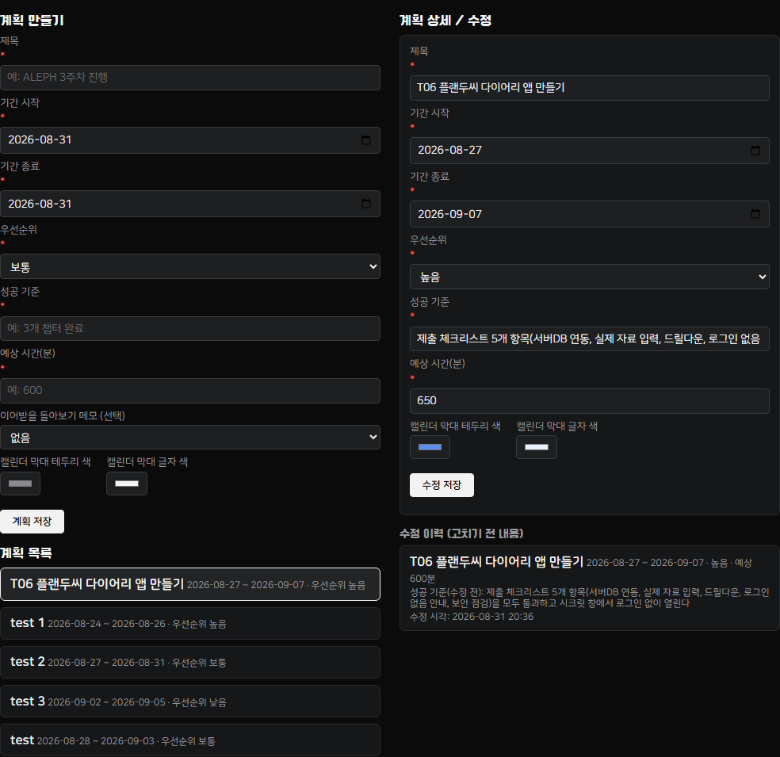
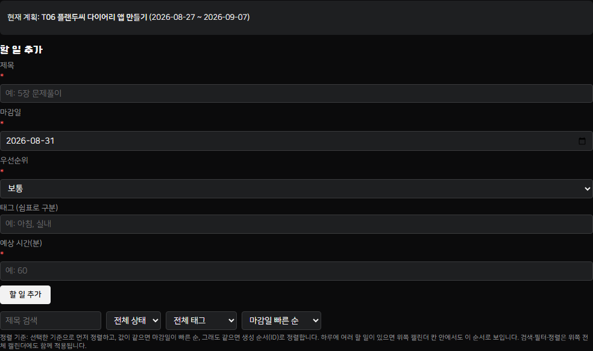
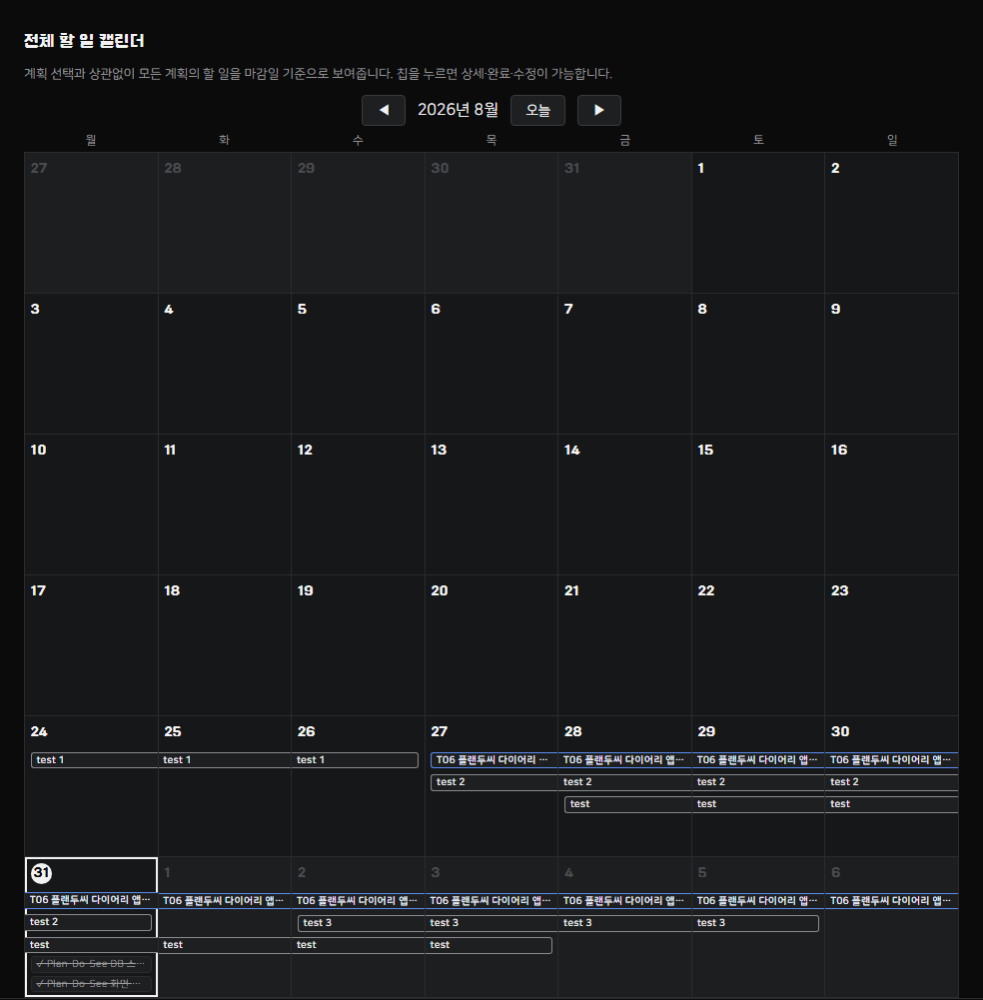
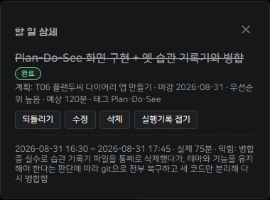
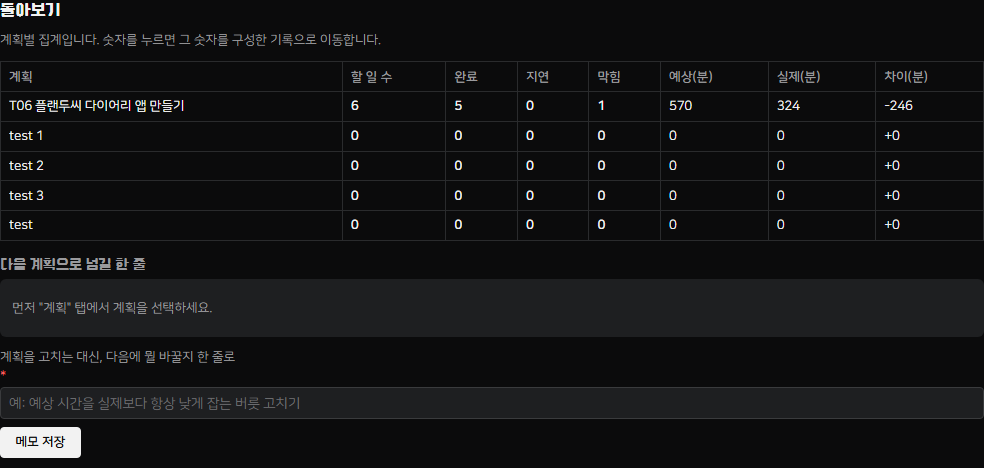
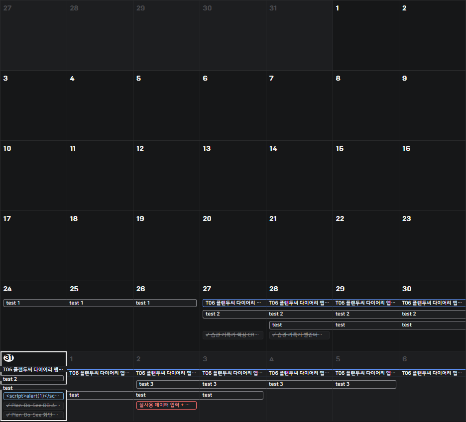

카드별 증거 — 5장 전부 완료
1계획 세우기완료
지금 실제로 하고 있는 일(이 앱을 만드는 작업 자체)을 계획으로 등록했다. 기간·우선순위·성공 기준·예상 시간이 저장되고, 계획을 한 번 고친 뒤(예상 시간 600분 → 650분, 실제로 습관 기록기 병합 작업 때문에 범위가 늘어난 걸 반영) 고치기 전 내용이 "수정 이력"에 그대로 남는다.

2할 일 다루기완료
계획에 딸린 할 일 6개(완료 5개·진행중 1개)를 등록했다. 제목·마감일·우선순위·태그·예상 시간을 저장하고, 검색·태그 필터·상태 필터·정렬을 지원한다. 검색·필터·정렬은 위쪽 "전체 할 일 캘린더"에 곧바로 반영된다.


3실제로 한 일 적기완료
완료한 할 일마다 실행 기록(시작·종료 시각, 실제 걸린 시간, 막힌 이유)이 계획과 별개로 남는다. "Plan-Do-See 화면 구현 + 옛 습관 기록기와 병합" 항목은 실제로 작업 중 습관 기록기 파일을 통째로 삭제했다가 되돌린 사건이 있었는데, 그 사실을 막힌 이유에 그대로 적었다.

완료 버튼(RPC complete_todo)은 조건부 UPDATE(WHERE status <> 'done')로 멱등 처리되어 연달아 눌러도 실행 기록·집계가 한 번만 늘어난다(자동 테스트로 확인).
4돌아보기, 그리고 다음 계획으로완료
계획별로 할 일 수·완료 수·지연 수·막힘 수와 예상/실제/차이 시간을 집계한다. 숫자를 누르면 그 숫자를 구성한 실제 기록으로 드릴다운된다.


"다음 계획으로 넘길 한 줄" 기능(돌아보기 메모 → 새 계획 생성 폼 드롭다운 → carried_note_id로 실제 DB 연결)은 자동 테스트로 검증했다(PROGRESS.md 참고).
5내 것으로 채우고, 잃지 않게완료
전체 할 일 캘린더 — 계획 기간이 이어진 막대로 표시되고, 그 아래 할 일 칩이 마감일별로 보인다.

로그인 없음 안내 — 첫 화면 헤더에 고정 표시된다.
내보내기 — 전체 자료를 JSON 파일 하나로 내보낼 수 있다.
스크립트 삽입 방어 — 할 일 제목에 <script>alert(1)</script>를 실제로 저장해 배포 화면에서 재현했다. 대화상자가 뜨지 않고 캘린더 칩에 글자 그대로 표시된다(확인 후 곧바로 삭제).

새로고침 복원 / 시크릿 창 — Playwright로 배포 주소를 새 브라우저 컨텍스트(쿠키·로컬스토리지 없음, 시크릿 창과 동등)로 열어 로그인 절차 없이 로드되는지, 새로고침 전후 값이 같은지 확인했다(콘솔 에러 0건).
비밀값 점검 — config.js에는 Supabase anon(public) key 하나만 있다. JWT payload를 디코드하면 "role":"anon"으로 공개 키임을 확인했고, git log --all -p로 저장소 전체 이력을 훑어도 service_role/secret_key/비밀번호 패턴은 없다.